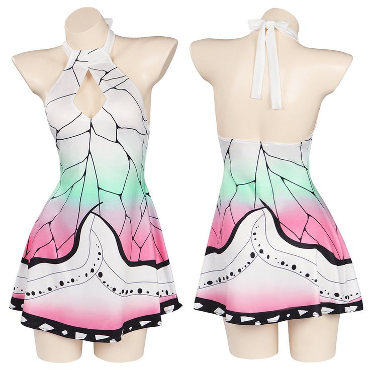

New Arrivals
 Hutao |
 Nahida |
 Rengoku Kyoujurou |
Best Sellers
|
Lumine Bikini |
Hinata swimsuit |
 Nilou |
 Kaminari |
 Kochou Shinobu |
Our Products
|
Genshin Impact |
 My Hero Academia |
 Demon Slayer |
 Naruto |
 Sailor Moon |